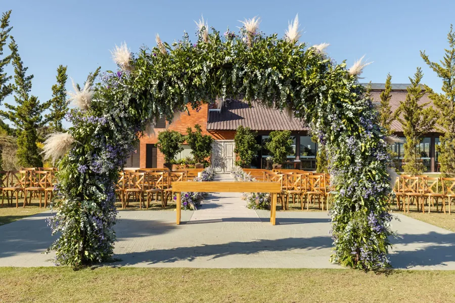
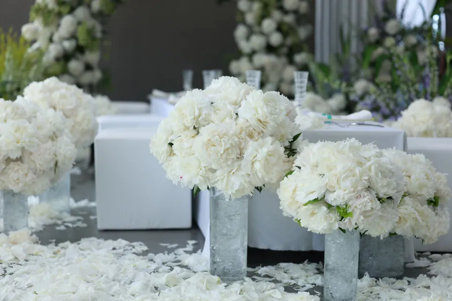

Başlıklar Instagram profilinizden alındı: düğün planlama, event ve çiçek tasarımı. Yayında her başlığın altında kendi çalışmalarınız ve sizin cümleleriniz durur.
Düğün planlamabaştan sona plan ve düzen (örnek)
Kınakına gecesi kurulumu (örnek)
Giriş yolumisafiri karşılayan ilk sahne (örnek)
Masa tasarımısofra düzeni, mum ve çiçek (örnek)
Çiçek tasarımıevent & floral design (örnek)
Instagram'da öne çıkanlar
Sayfanızdaki başlıklar, sitede de.
Profilinizdeki öne çıkan başlıklar sitede birer bölüm olur; yayında her birinin içinde kendi fotoğraflarınız açılır.
Kına
Düğün
Giriş yolu
Masa tasarımı
Themasflower
Collesia Otel
Villa Castelio
Ruma

Giriş ve törenkemer, yol, karşılama (örnek)Masa tasarımımum, çiçek, sofra (örnek)

Çiçek tasarımıbeyaz tonlu aranjman (örnek)
İletişim
Anlatın, planlayalım.
Ne zaman, kaç kişiyle, nasıl bir hava; bir mesajınız yeter.